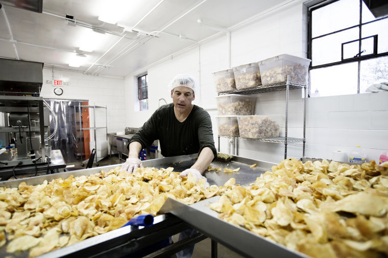

College
After completing high school at Chaminade College Prep In St. Louis, I attended Butler University in Indianapolis, Indiana. Majoring in what at the time was called "Digital Media Production"

Minimum Wage
Life after College can be tough, and I ended up working a few different minimum wage jobs to make some cash while I looked for a career. These jobs included working at as a cashier at a liquor store and even frying potato chips for a local artisan potato chip company.

Graphic Design
My first real "big boy" job was as a graphic designer at a local print shop called Hi-Tec Copy Center in University City, down the street from where I grew up, and across the street from where I live currently.

Marketing
After working in the print shop for over 2 years, I decided to branch out and try my hand at digital marketing. I ended up landing a job at an agency formerly called Marquette Group, where I ran pay-per-click ads for insurance agents, financial advisors, and many other industries!
Pay-per-click marketing took me a long way, and I ended up rapidly increasing my salary, learning a ton, and interacting with a ton of business owners and stakeholders. After Marquette Group (now called Mindstream Media), I worked for a small agency called Clix in Olivette, and then another boutique agency called Digital Strike, where I work currently!
Coding
As an introvert, conversing with clients, bosses and coworkers all day can be rather exhausting. There are parts about my job that I enjoy, but these are parts where I work by myself and analyze data, interpret the results, and optimize my campaigns. One of my former coworkers, Justin MacDonald, and even my brother's financee Erica Kaiser went through LaunchCode programs, and I knew that that was what I wanted to do too. I applied in Spring 2019 and unfortunately I didn't get into the program. I was really disheartened. Even though I didn't get in, I refused to give up and applied again in the Fall of 2019, and I got in! And now I am so happy to be writing this web page :)

Success is no accident. It is hard work, perseverance, learning, studying, sacrifice and most of all, love of what you are doing or learning to do. - Pele
If you may be interested in learning coding and programming I encourage you to apply for the next session at Launchcode.org